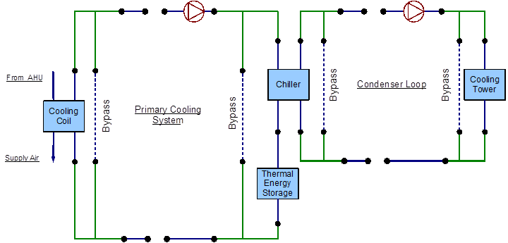
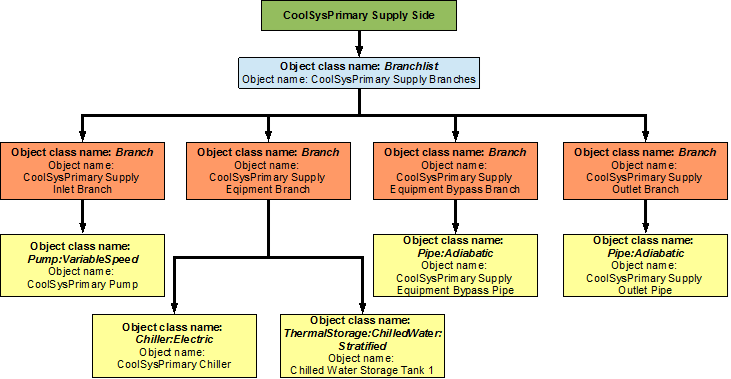
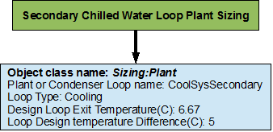

Application Guide for Plant Loops
User Guide for Modeling Plant Systems
Introduction
This document provides an in-depth look at plant modeling in EnergyPlus. Plant refers to the subset of HVAC that involves hydronic equipment for heating, cooling, and service water heating (or domestic hot water).
This guide serves as an aid to help model plant systems in EnergyPlus simulations. It is intended to augment the Input Output Reference, which describes the syntax and the details of individual input objects. This guide will discuss how the different objects can be used to construct a plant loop that can service a building load.
Organization
This document begins with some general information to introduce users to the syntax used in EnergyPlus as well as this guide. Then some basic conversion methods needed to take a real system and format it to simplify the input process are provided. The bulk of this Application Guide is devoted to modeling example systems. The example systems are intended to demonstrate the input process for various types of plant systems, such as systems that use thermal energy storage tanks and those that have a primary/secondary pumping configurations.
The example systems are defined by breaking the system into its constituent loops. The loops are then separated into supply and demand sides. These half-loops are then defined by branches, connectors, and components. The controls for each loop are set after the loop has been completed. Figures and flowcharts are used to display the definition process. The flow charts should be read from top to bottom and each branched level should be read from left to right.
The Object Class Names and Object Names used in the flow charts match those used in the input file provided for the example. One thing that is not specified in the flow charts or figures is the node names used. The various object class names and object names used in the examples refer to the entries in the example input files.
Scope
The scope of modeling plant loops in EnergyPlus is limited depending on the application. For example, there is no provision to model nested loops, and multiple splitter-mixer pairs in a single loop which are often used in large scale systems. Thus, it has to be realized that modeling large scale district loops may be challenging in EnergyPlus. One way to model such systems is to make some assumptions to condense some arrangements of components that cannot be modeled in EnergyPlus. This approach may not work because the arrangements could be very important to the system. Figure 1 shows a central plant chilled water system for the University of California, Riverside (Hyman and Little, 2004). This system contains a total of eight splitter-mixer pairs, four on the supply side, and four on the demand side. We could make some assumptions to simplify the system. For example we can use a single chiller instead of the array of five chillers, this could work if we size and control the chiller properly, but the concept of scheduling the different chillers to operate at different times of the day to improve efficiency will be lost. Hence, it should be noted that while simplifications can provide a general overview of how the system will operate, they may defeat the original purpose of the complex design. Therefore, this guide will only discuss building plant systems which are less complicated.

Figure 1 - Central plant chilled water schematic for the University of California, Riverside (recreated from Hyman and Little, 2004)
EnergyPlus Nomenclature
The following is a list of terms that are used in this guide. A simple description of each of the terms is provided. More detailed descriptions can be obtained from the EnergyPlus Input Output Reference. Some keywords are provided to assist with the search for these terms in the Input Output Reference guide.
-
Loops – Loops are high-level construction objects in EnergyPlus. Loops are paths through which the working fluid is circulated in order to satisfy a cooling or heating load. An HVAC system may consist of a zone, plant loop, and a condenser loop. Loops are constructed by using branches. (Keywords: PlantLoop). Note: Although EnergyPlus has separate object classes for CondenserLoops and PlantLoops, the difference between them is very trivial; therefore all the condenser loops in this guide will be modeled by a PlantLoop object.
-
Supply side half-loop – This is the half loop that contains components (such as Boilers and chillers) which treat the working fluid to supply a working fluid state to the demand components.
-
Demand side half-loop – This is the half loop that contains components (such as cooling coils and heating coils which use the working fluid to satisfy a load.
-
Branches – Branches are mid-level construction objects in EnergyPlus. Branches are the segments used to construct the loops. They are constructed by using nodes and a series of components. Every branch must have at least one component. Branches will be denoted by using blue colored lines in the EnergyPlus schematics. (Keyword: Branch).
-
Branchlists – Branchlists list all the branches on one side of a loop. (Keyword: Branchlist).
-
Bypass Branch – A bypass branch is used to bypass the core operating components, it ensures that when the operating components are not required, the working fluid can be circulated through the bypass pipe instead of component. Note: Only one bypass per half loop is required.
-
Connectors – Connectors are mid-level loop construction objects that are used to connect the various branches in the loops. There are two kinds of connectors: splitter which split the flow into two or more branches, and mixers which mix the flow from two or more branches. A connector pair consists of a splitter and a mixer. A maximum of one connector pair is allowed on each half loop. Connectors will be denoted by using green colored lines in the EnergyPlus schematics used in this guide. (Keywords: Connector:Mixer, Connector:Splitter).
-
Connectorlists – Connectorlists list all the connectors on one side of a loop. (Keyword: Connectorlist).
-
Components – Components are the low-level construction objects in EnergyPlus. Physical objects that are present in the loop are generally called components. Components such as a chiller, cooling tower, and a circulation pump can be considered as the operating/active components. Pipes and ducts can be considered as passive or supporting components. (Keywords: Chiller:Electric, Pipe:Adiabatic, and many others).
-
Nodes – Nodes define the starting and ending points of components and branches.
-
Nodelists – Nodelists can be used to list a set of nodes in the loop. These nodelists can then be used for a variety of purposes. For example, a setpoint can be assigned to multiple nodes by referring to a particular nodelist. (Keyword: Nodelist).
-
Set-point – Setpoints are control conditions imposed on node(s) that are monitored by the SetpointManager to control the system. (Keyword: SetpointManager:Scheduled, and others).
-
Plant equipment operation scheme – This object details the mechanism required to control the operation of the plant loop, as well as the availability of the plant equipment under various conditions. (Keyword: PlantEquipmentOperation:CoolingLoad, and others).
-
Schedule – Schedules allow the user to influence the scheduling of many operational parameters in the loop. For example, a schedule can determine the time period of a simulation, or instruct the load profile object of a plant to import data from a certain external file, among other actions. (Keywords: Schedule:Compact, Schedule:file).
-
Load Profile – A load profile object is used to simulate a demand profile. This object can be used when the load profile of a building is already known. (Keyword: LoadProfile:Plant). Note: This object does not allow feedback from the plant conditions to the air system or the zones. However, this object is a great tool for plant-only development and debugging.
Generating an EnergyPlus Line Diagram
The following list of steps will outline the process for converting an engineering line diagram into an EnergyPlus line diagram. Throughout the process, the components in the systems should be identified and named properly. It is easier to input the system if a list of components and their names is available.
1. Obtain an engineering line diagram for the system.
2. Identify all the loops in the system. Some systems may be very complex, but an effort should be made to separate the system into its constituent plant loops. A system may have multiple plant loops. Therefore, proper documentation of the loops and their components should be a priority.
3. Identify the demand side and supply side of the individual loops. EnergyPlus expects the demand side loop and supply side loop to be entered separately. Some examples of simple plant loops are: a hot water heater (supply component) connected to a heating coil (demand component), a chiller (supply component) connected to a cooling coil (demand component) or a cooling tower (supply component) connected to a water cooled chiller (demand component). These loops may have multiple supply components and multiple demand components. A chiller may also be a supply or demand component depending on the loop.
4. Identify the components in the system. All the operating/active components, such as chillers, pumps, cooling towers, thermal energy storage tanks, heating and cooling coils, and other components should be identified and named properly. It should be noted that even though EnergyPlus has objects for modeling valves, they are not often used. Instead the flow through a component is regulated by using schedules, plant equipment operation schemes and set points. Passive components such as inlet and outlet pipes for each side of the loop should also be identified, as they will help in modeling the loop connectors.
5. Identify all the nodes in the system. Nodes are necessary to connect the different components in the system. Nodes define the starting and ending points of branches as well as intermediate nodes on multi-component branches. A good method to pin-point nodes on the line diagram would be to put a node on either side of an active or passive component. Note: If the outlet of one component does not feed into a splitter or a mixer, then the outlet node will be the same as the inlet node of the downstream component.
6. Identify all the branches in the loops. A good way to define a branch would be to include at least one of the components in the branch. Branches can accommodate multiple components in series, but parallel components should be modeled on separate branches. Operating/active components (except pumps) should be bypassed by adding a bypass branch parallel to the branch containing the active component. Multiple bypass branches in parallel can be replaced by a single bypass branch.
7. Identify the position of the connectors in the system. Connectors are an integral part of the system and are important in constructing the loop. There are two types of connectors, splitters and mixers. Splitters can distribute the flow from a single branch into multiple parallel branches. Mixers can combine the flow from multiple branches into a single branch. As mentioned above, most systems have multiple supply and demand side components, so splitters and mixers play a crucial role in distributing and recombining the flow of the working fluid through all the components.
8. Generate an EnergyPlus diagram of the whole system as well as the individual loops by using the information gathered from the preceding steps.
A flowchart for this process is provided in Figure 2 .

Figure 2 - Flowchart for EnergyPlus line diagram generation
Example for EnergyPlus Line Diagram Generation
A series of figures are provided below to detail the process for generating an EnergyPlus line diagram.
1. Obtain a simple engineering line diagram for the system. This system is a simple cooling system that employs a primary/secondary pumping setup with a one-way common pipe to circulate chilled water through a building. Figure 3 shows the simple line diagram for the system.

Figure 3 - Simple line diagram for the example system, (recreated from Reed and Davis 2007)
2. Identify all the loops in the system. This system contains only one plant loop. Loop name: Cooling Loop.
3. Identify the demand side and supply side of the loop. The half loops are depicted in Figure 4.

Figure 4 - Breakdown of a loop into its constituent half-loops
4. Identify the components in the system. While identifying the main components in the loop, it should be noted that this loop has a primary/secondary pumping setup, and that there is a common pipe that allows for flow imbalance. (Note: The PlantLoop object in EnergyPlus has a provision for the input of a common pipe. The user only has to specify the existence of a common pipe in the loop, and the program calculates its position in the loop). The primary pump is shown below is shown in Figure 5.

Figure 5 - A component in the loop
5. Identify all the nodes in the system. As mentioned above, placing a node on each side of a component is a good way to pinpoint all the nodes in the system. This process should be repeated for every component in the loop. Figure 6 shows the placement of all the nodes on Individual components, while Figure 7 shows all the nodes in the system.

Figure 6 - Node placement on components

Figure 7 - Nodes in the system
Note: No nodes were placed on the common pipe, but its existence should be specified in the PlantLoop object.
6. Identify all the branches in the system. Remember to add the bypass branches to the operating components (except the pumps). Branches have to start and end with nodes, and should contain at least one component. The branches are denoted by the blue lines in Figure 8.

Figure 8 - Branch definition
7. Identify the position of the connectors in the system. The PlantLoop accepts only one splitter-mixer pair per half loop. The connectors are defined by using branches; a splitter can have one inlet branch and any number of outlet branches whereas a mixer can have any number of inlet branches and one outlet branch. All the connectors in the loop are denoted by the green lines in Figure 9.

Figure 9 - Splitters and mixers in the loop
8. An EnergyPlus diagram can be generated by using all the identified components. The complete schematic is shown in Figure 10.

Figure 10 - Complete EnergyPlus line diagram
Inputting the system into the IDF file
Since, it is not possible to input schematics into the input file, it is important to add descriptive comments to all of the entries to ensure that all the components in the system have been accounted for. Such documentation will also make debugging easier. It should be noted that all of the syntax for the inputs is documented in the Input-Output reference guide. A flowchart for the basic input process is provided in Figure 11.

Figure 11 - Flowchart for input process
Example System 1: Chiller and Condenser Loops
A simple cooling system will be used as an example to demonstrate the process of inputting a system into the input file. The input file for this example can be found under the name: PlantApplicationsGuide_Example1.idf.
This particular system consists of two unique sub-systems/loops. It contains the PlantLoop with the chiller and the load profile, and another PlantLoop with the cooling tower. A schedule containing previously obtained simulation loads is used to simulate the demand load profile for this loop (Note: In a more general scenario a cooling coil placed in a building zone would provide the load profile). Flow diagrams along with some keywords from the input file will be used to record to steps that are required to properly input the system into EnergyPlus. The simple line diagram for this system is provided in Figure 12. The complete EnergyPlus schematic for the system is provided in Figure 13.

Figure 12 - Simple cooling system line diagram

Figure 13 – EnergyPlus line diagram for the simple cooling system
The cooling system consists of a chilled water loop which is defined by the PlantLoop object, and a condenser loop which is also defined by the PlantLoop object. Identification of these loops in the system is critical for the process of modeling the system in the input file the flowchart for loop identification is provided in Figure 14.

Figure 14 - Flowchart for loop identification
Chilled water (CW) loop
The chilled water loop is constructed by using a PlantLoop object. This loop uses a water-cooled electric chiller to supply chilled water to the demand side of this loop. As mentioned above, the cooling coil is replaced by a load profile object that contains the demand load profile. The chiller is operated by using set points, plant equipment operation schemes and schedules. Refer to Figure 15 for a simple diagram of the Chilled Water Loop.

Figure 15 - Simple line diagram for the chilled water loop
Flowcharts for the CW Loop Input Process
This series of flow charts serve as a process guide for identifying and inputting the chilled water loop and its components into the input file. Refer to Figure 16 for an EnergyPlus schematic of the Chilled Water Loop.

Figure 16 - EnergyPlus line diagram for the chilled water loop
The “PlantLoop” object is entered into the input file, with water as the working fluid. The supply side of the chilled water loop is then input into the system followed by the demand side. A flow chart for separating the half loops in the loop is provided in Figure 17.

Figure 17 - Simple flowchart for separation of half loops in the chilled water loop
CW Loop Supply Side Loop Construction
The main components in the supply side of the chilled water loop are the circulation pump for the chilled water and the electric chiller that supplies the chilled water. The set-point is set to the outlet node of this half of the loop; the temperature at this node is controlled to regulate the operation of the chiller. This side of the loop has eight nodes, four components and four branches, while it is not required to define individual node positions in the loop, the components and branches have to be defined with an inlet and an outlet node. Connectors are the objects that connect the branches together and complete the loop. Therefore, the branches and the connectors will set the positions of the nodes in the loop. The EnergyPlus line diagram for the Chilled Water Loop supply side is provided in Figure 18. The flowchart for supply side branches and components is provided in Figure 19. The flowchart for the supply side connectors is provided in Figure 20.

Figure 18 - EnergyPlus line diagram for the supply side of the chilled water loop

Figure 19 – Flowchart for chilled water loop supply side branches and components

Figure 20 – Flowchart for chilled water loop supply side connectors
CW Loop Demand Side Loop Construction
The demand side of the loop is entered next. The main component in this side of the loop is the cooling load profile(instead of the cooling coil). This load profile is input by using a Schedule:Compact object which indicates the hourly cooling loads for the annual run period. In a more general scenario a cooling coil would take the place of the load profile and the cooling load will be simulated from the data obtained in the building system energy simulation. Apart from the load profile, the structure of the loop is very similar to the structure of the supply side. This side of the loop also has eight nodes, four components, and four branches. An EnergyPlus schematic for the demand side is provided in Figure 21. The flowchart for demand side branch definition is provided in Figure 22. The flowchart for the demand side connectors is provided in Figure 23.

Figure 21 - EnergyPlus line diagram for the demand side of the chilled water loop

Figure 22 – Flowchart for chilled water loop demand side branches and components

Figure 23 – Flowchart for chilled water loop demand side connectors
As shown in the flowchart above, the load profile is attached to the chilled water loop at its designated position (the LoadProfile:Plant object can be used just like any other component) on the demand side of the loop.
Flowcharts for CW Loop Controls
The chilled water loop is operated by using set-points, plant equipment operation schemes and schedules.
Chilled Water Loop Schedules
The chilled water loop uses two different schedules to operate properly. The Chiller AlwaysOnSchedule is a compact schedule that keeps the chiller ON at all times of the day for a whole year. This compact schedule uses a discrete ScheduleTypeLimit (CW Loop On/Off) which defines that the value of On is 1 and that of Off is 0. This plant loop also uses another compact schedule named CW Loop Temp Schedule to set the temperature at the chilled water loop outlet node. This schedule uses a schedule type limit named CW Loop Any Number. The flowchart for chilled water loop schedule definition is provided in Figure 24.

Figure 24 – Flowchart for chilled water loop schedules
Chilled Water Loop Plant Equipment Operation Schemes
The PlantEquipmentOperationschemes object uses the Chiller AlwaysOnSchedule and the CW Loop Cooling Load objects to set the range of the demand load for which the chiller can be operated during the simulation period. Operation schemes are especially useful and crucial when using multiple active components. For example, the performance of multiple chillers can be optimized by carefully managing the load ranges on each of the chillers. A flowchart detailing the chilled water loop plant equipment operation schemes is provided in Figure 25.

Figure 25 – Flowchart for chilled water loop plant equipment operation schemes
Chilled Water Loop Setpoints
The Chilled Water Loop Setpoint Manager uses the CW Loop Temp Schedule to set a temperature control point at the CW Supply Outlet Node. This setpoint allows the program to control the temperature at the node by operating the components in the chilled water loop. Since, setpoint managers are high-level control objects, their usefulness is realized in much more complex systems, where multiple nodes have to be monitored in order to operate the system properly. A flowchart for chilled water loop setpoints is provided in Figure 26.

Figure 26 – Flowchart for chilled water Loop setpoints
Chilled Water Loop Sizing
The chilled water loop is sized such a way that the design loop exit temperature is 7 degrees Celsius, and the loop design temperature difference is 5 degrees Celsius. A flowchart for the chilled water loop sizing is provided in Figure 27. Note: Since the Load Profile object does not demand any feedback from the PlantLoop object, the chilled water loop does not necessarily need to be sized (This object is commented out in the example file). The sizing shown here is just an example of how the object class can be used in EnergyPlus.

Figure 27 – Flowchart for chilled water loop sizing
Condenser Loop
The condenser loop uses a cooling tower to supply cooling water to the water-cooled electric chiller in the chilled water loop. Hence, the supply side of this loop consists of the cooling tower and the demand side consists of the electric chiller. The schedules for this loop are almost identical to the ones applied on the CW loop. They dictate that the cooling tower also works around the year. The plant equipment schemes specify the cooling capacity/load of the cooling tower. The operation of the cooling tower is managed by monitoring the outdoor air wet bulb (air cooled condenser) temperature at the location of the simulation. The structure of this loop is very similar to that of the chilled water loop, the only difference being the main components in the loop. A simple line diagram of the condenser loop is provided in Figure 28.

Figure 28 - Simple line diagram for the condenser loop
Flowcharts for the Condenser Loop Input Process
As discussed in Section 1 the supply side and the demand side of the loop are modeled separately by following the process provided in the flow chart. The flow charts for this loop are provided below.
A PlantLoop object is used to model the condenser loop with the chiller and the cooling tower as its main components. The working fluid is water. This loop is also sized such that the loop exit temperature is set to 20 degrees Celsius and the loop design temperature difference is 5 degrees Celsius. The chiller serves as the bridge between the chilled water loop and the condenser loop. This is achieved by managing the nodal connections on the chiller, hence the chiller appears on two branches in the system (supply branch of the CW loop, and the demand branch of the condenser loop). The EnergyPlus line diagram for the condenser loop is provided in Figure 29. A simple flow chart for the separation of the half loops is provided in Figure 30.

Figure 29 - EnergyPlus line diagram for the condenser loop

Figure 30 - Simple flowchart for separation of half loops in the condenser loop
Condenser Loop Supply Side Construction
The main components in the supply side of the condenser loop are the condenser circulation pump and the cooling tower. The temperature set-point is set at the outlet node, where the outdoor air wet bulb temperature is monitored to regulate the operation of the cooling tower. The outdoor air conditions are obtained from the weather information file during the simulation. This side of the loop has eight nodes and four branches. An EnergyPlus diagram for the condenser loop supply side is provided in Figure 31. The flowchart for supply side branch definition is provided in Figure 32. The flowchart for the supply side connectors is provided in Figure 33.

Figure 31 - EnergyPlus line diagram for the supply side of the condenser loop

Figure 32 - Flowchart for condenser supply side branches and components

Figure 33 - Condenser loop supply side connectors
Condenser Loop Demand Side Construction
The central component of the demand side is the chiller. The flowchart for the construction of the demand side is also provided below. The schedules for this side do not need to be specified, because the schedules that apply to the chiller also apply to this side of the condenser loop. This side of the loop also contains eight nodes and four branches. An EnergyPlus schematic for the demand side is provided in Figure 34. The flowchart for demand side branch definition is provided in Figure 35. The flowchart for the demand side connectors is provided in Figure 23.

Figure 34 - EnergyPlus line diagram for the demand side of the condenser loop

Figure 35 - Condenser loop demand side construction

Figure 36 - Condenser loop demand side schedules, equipment schemes and setpoints
Flowcharts for Condenser Loop Controls
The cooling tower is also scheduled similar to the chiller because both of these units have to work together in order to satisfy the cooling load. The operation of the cooling tower is determined by using a set point at the condenser supply exit node. This set point monitors the temperature at this node as well as the outdoor air wet bulb temperature to operate the cooling tower. The flowchart for the schedules, plant equipment schemes, and the set points are also provided below.
Condenser Loop Schedules
The Tower AlwaysOnSchedule is a compact schedule that keeps the tower ON at all times of the day for a whole year, this compact schedule uses a discrete scheduletypelimit (Tower On/Off) which defines that the value of On is 1 and that of Off is 0. A flowchart for condenser loop schedules is provided in Figure 37.

Figure 37 - Condenser loop schedules
Condenser Loop Plant Equipment Operation Schemes
The plant equipment operation schemes for the condenser loop are very similar to those of the chilled water loop. The PlantEquipmentOperationschemes object uses the Tower AlwaysOnSchedule and the Tower Load objects to set the range of the demand loads for which the cooling tower is operated during the simulation period. A flowchart for the condenser loop plant equipment operation schemes is provided in Figure 38.

Figure 38 - Condenser loop plant equipment operation schemes
Condenser Loop Setpoints
The Condensercontrol setpointmanager places a temperature setpoint at the Condenser Supply Outlet Node. The temperature at this point is controlled with respect to the outdoor air wet bulb temperature at that point in the simulation. The outdoor air wet bulb temperature is obtained from the weather data at the location of the simulation. A flowchart for the condenser loop setpoint is provided in Figure 39.

Figure 39 - Condenser loop setpoints
Condenser Loop Sizing
The condenser loop is sized such that the loop exit temperature is 20 degrees Celsius and the loop temperature difference is 5 degrees Celsius. A flowchart for condenser loop sizing is provided in Figure 40.

Figure 40 - Condenser loop sizing
Example System 2: Thermal Energy Storage
This system will detail the process required to model a Plant Loop coupled with Thermal Energy Storage (TES) in EnergyPlus. The input file for this example can be found under the name: PlantApplicationsGuide_Example2.idf.
The TES tank will be charged by using a chiller loop, which will in turn be cooled by a condenser loop. The schedules for this system are setup such that the TES tank will be charged by the chiller during the night and then the stored chilled water is used to satisfy the building cooling load during the day. The TES tank used in this system is a stratified tank. This system also includes one heating loop which satisfies the heating load. The cooling and heating system operate in conjunction with an air loop that is spread across a total of five zones. The air loop modeling will not be discussed in this guide. This system consists of a total of three separate plant loops, the cooling side is comprised of two loops and the heating side contains one loop. A simple line diagram for the cooling system is provided in Figure 41. The EnergyPlus line diagram for the cooling loop is provided in Figure 43. A simple line diagram for the heating loop is provided in Figure 42, whereas its EnergyPlus line diagram is provided in Figure 44.

Figure 41 – Simple line diagram for cooling system

Figure 42 - Simple line diagram for heating loop

Figure 43 - EnergyPlus line diagram for cooling system

Figure 44 - EnergyPlus line diagram for heating loop
SHWSys1
The cooling side of the system will be modeled first. The primary cooling loop (named “CoolSysPrimary” in the input file) uses the chiller as the supply side component to charge the TES tank. The chilled water that is stored in the TES tank is then supplied to the cooling coil. A cooling tower that operates on the supply side of the condenser loop (named “Condenser Loop”) supplies the cooling water to the chiller that is used in the primary cooling loop. These two loops serve as the cooling system for this building. This system will be modeled first with emphasis placed on the primary cooling loop. In particular the schedules used for the charging and discharging the TES tank play a crucial role in the efficient operation of the system.
The building also has one heating loop. The heating loop (named “HeatSys 1”) uses a boiler to provide hot water to five heating coils that are located in the five zones. This heating loop also supplies hot water to the reheat coil. A flow chart for loop identification is provided in Figure 45.

Figure 45 - Flowchart for loop identification
Primary Cooling Loop (CoolSysPrimary) - Chiller
The primary cooling system is constructed by using a PlantLoop object. It uses an electric chiller that generates chilled water which is used to charge the TES tank at night. The chilled water stored in the TES tank is later used during the peak hours to satisfy the demand loads. Therefore, the supply side of the loop contains the electric chiller and the charge side of the TES tank. The demand side loop contains the cooling coil. The loop is operated by using plant equipment operation schemes, and schedules. Refer to Figure 46 for a simple diagram of the Primary Cooling Loop.

Figure 46 - Simple line diagram for the primary cooling system
Flowcharts for the Primary Cooling Loop Input Process
This series of flowcharts serve as a guide for identifying and inputting the CoolSysPrimary loop and its components into the input file. The working fluid in this loop is water. The important area for this loop is its controls. The EnergyPlus line diagram for this loop is provided in Figure 47. A simple flowchart for the separation of the half loops is provided in Figure 48.

Figure 47 - EnergyPlus line diagram for the primary cooling system

Figure 48 - Simple flowchart for the separation of half-loops in the primary cooling system
CoolSysPrimary Supply Side Loop Construction
The main components on the supply side half loop for the primary cooling system are the electric chiller that supplies the chilled water, the variable speed pump that circulates the chilled water through the loop, and the TES tank that stores the supplied chilled water. This half loop supplies chilled water to the cooling coil which is placed on the demand side half loop. The supply side half loop contains five components, four branches, nine nodes, and one splitter-mixer pair. The EnergyPlus line diagram for the primary cooling loop supply side is provided in Figure 49. The flowchart for supply side branches and components is provided in Figure 50. The flowchart for supply side connectors is provided in Figure 51.

Figure 49 - EnergyPlus line diagram for the supply side of the primary cooling loop

Figure 50 – Flowchart for primary cooling loop supply side branches and components

Figure 51 – Flowchart for primary cooling loop supply side connectors
CoolSysPrimary Demand Side Loop Construction
The main component on the demand side half loop is the cooling coil which cools the air in the building by using the chilled water that is supplied by the supply side half loop. This side of the loop has eight nodes, four components, four branches, and one splitter mixer pair. An EnergyPlus line diagram for the demand side is provided in Figure 52. The flowchart for demand side branch definition is provided in Figure 53. The flowchart for the demand side connectors is provided in Figure 54.

Figure 52 - EnergyPlus line diagram for the demand side of the primary cooling loop

Figure 53 – Flowchart for primary cooling loop demand side branches and components

Figure 54 – Flowchart for primary cooling loop demand side connectors
Flowcharts for Primary Cooling Loop Controls
The Primary Cooling loop is operated by using set-points, plant equipment operation schemes and schedules. The TES tank charging schedule is one of the most important schedules in this system.
CoolSysPrimary Schedules
The flowchart for Primary Cooling loop schedule definition is provided in Figure 56. The Primary Cooling loop uses five different schedules to operate properly. The PlantOnSchedule is a compact schedule that keeps the chiller and the TES tank ON at all times of the day, this compact schedule uses a discrete ScheduleTypeLimit (On/Off) which defines that the value of On is 1 and that of Off is 0. This plant loop also uses another compact schedule named CW Primary Loop Temp Schedule declare that the temperature of the chilled water loop outlet flow is 6.7 degrees Celsius at all times. This schedule is used by the setpoint manager (CoolSysPrimary Loop Setpoint Manager). This schedule uses a schedule type limit named Temperature, which defines the upper and lower loop temperature limits
The compact schedule ALWAYS_ON dictates that the use/discharge side of the TES tank is On at all times of the day. This schedule uses the ScheduleTypeLimit (Fraction) to set the fractional flow rate of the use side. This schedule is used to define the use side availability of the TES tank. The compact schedule CW Tank Temp Schedule is input in the TES tank object class to define the limits of the temperature for the chilled water storage tank outlet. This schedule uses the ScheduleTypeLimit (Temperature) to define that the temperature at that outlet should be 7.5 degrees Celsius at all times of the day.
The TES Charge Schedule is a very important schedule for the functioning of the CoolSysPrimary Loop the schedule from the input file is provided in Figure 55. The schedule shows that, the on/off ScheduleTypeLimit is used to determine if the TES schedule is On or off for a certain period of time. A value of 1.0 means On and a value of 0 means Off. For example, it can be observed from the figure that, for the weekdays the TES tank is charged until 10:00AM, then it is operated during the day from 10:00 AM to 5:00 PM and then it is charged until midnight. The schedule for the other days is also shown in the figure.

Figure 55 - TES Charge Schedule

Figure 56 – Flowchart for primary cooling loop schedules
CoolSysPrimary Plant Equipment Operation Schemes
This loop has two plant equipment operation schemes, one for the chiller and one for the TES tank. The PlantEquipmentOperationschemes object uses the PlantOnSchedule and the CoolSysPrimary Operation Scheme objects to set the range of demand loads for which the chiller is operated during the simulation period. Operation schemes are especially useful and crucial when using multiple active components. For example, the performance of multiple chillers can be optimized by carefully managing the load ranges on each of the chillers. It should be noted that it is required to enter a plant equipment operation scheme for every plant loop in the system. A flowchart detailing the chilled water loop plant equipment operation schemes is provided in Figure 57.

Figure 57 – Flowchart for Chiller plant equipment operation schemes
The TES tank operation is modeled here. The PlantEquipmentOperationschemes object uses the PlantOnSchedule and the TES Operation Scheme objects to set the range of the demand loads for which the TES tank is operated during the simulation period. A flowchart detailing the Secondary Cooling Loop plant equipment operation schemes is provided in Figure 58.

Figure 58 – Flowchart for Thermal Energy Storage plant equipment operation schemes
CoolSysPrimary Setpoints
The CoolSysPrimary Loop Setpoint Manager uses the CoolSysPrimary Loop Temp Schedule to set a temperature control point at the CoolSysPrimary Supply Outlet Node. This setpoint allows the program to control the temperature at the node by operating the components in the Primary Cooling loop. A flowchart for Secondary Cooling loop setpoints is provided in Figure 59.

Figure 59 – Flowchart for primary cooling loop setpoints
CoolSysPrimary Sizing
The chilled water loop is sized such a way that the design loop exit temperature is 6.7 degrees Celsius, and the loop design temperature difference is 5 degrees Celsius. A flowchart for the Secondary Cooling loop sizing is provided in Figure 60.

Figure 60 – Flowchart for primary cooling loop sizing
Condenser Loop (Condenser Loop) - Cooling Tower
The Condenser Loop is constructed by using a PlantLoop object. It uses a cooling tower (modeled by using a CoolingTower:SingleSpeed object class) and a constant speed pump (modeled by using a Pump:ConstantSpeed) to supply cooling water to the electric chiller (modeled by using a Chiller:Electric object). Therefore, the supply side of the loop contains the Cooling Tower and the demand side contains the electric chiller. The loop is operated by using plant equipment operation schemes, and schedules. Refer to Figure 61 for a simple diagram of the Condenser Loop.

Figure 61 - Simple line diagram for the condenser loop
Flowcharts for the Condenser Loop Input Process
This series of flowcharts serve as a guide for identifying and inputting the Condenser Loop and its components into the input file. The EnergyPlus line diagram for this loop is provided in Figure 62. A simple flowchart for the separation of the half loops is provided in Figure 63.

Figure 62 - EnergyPlus line diagram for the condenser loop

Figure 63 - Simple flow chart for separation on half loops in the condenser loop
Condenser Loop Supply Side Construction
The main components on the supply side half loop for the Condenser Loop are the Cooling Tower that supplies the cooling water and the constant speed pump that circulates the cooling water through the loop. This half loop supplies cooling water to the electric chiller on the demand side half loop. The supply side half loop contains four components, four branches, eight nodes, and one splitter-mixer pair. The EnergyPlus line diagram for the Condenser loop supply side is provided in Figure 64. The flowchart for supply side branches and components is provided in Figure 65. The flowchart for supply side connectors is provided in Figure 66.

Figure 64 - EnergyPlus line diagram for the supply side of the condenser loop

Figure 65 – Flowchart for condenser loop supply side branches and components

Figure 66 – Flowchart for condenser loop supply side connectors
Condenser Loop Demand Side Construction
The main component on the demand side half loop is the Chiller that uses the cooling water supplied by the cooling tower. The chiller in turn is used to supply chilled water in the Primary Cooling loop. This side of the loop also has eight nodes, four components, four branches and one splitter-mixer pair. An EnergyPlus schematic for the demand side is provided in Figure 67. The flowchart for demand side branch definition is provided in Figure 68. The flowchart for the demand side connectors is provided in Figure 69.

Figure 67 - EnergyPlus line diagram for the demand side of the condenser loop

Figure 68 – Flowchart for condenser loop demand side branches and components

Figure 69 – Flowchart for condenser loop demand side connectors
Flowcharts for Condenser Loop Controls
The Condenser Loop is operated by using set-points, plant equipment operation schemes and schedules.
Condenser Loop Schedules
The flowchart for condenser loop schedule definition is provided in Figure 70. The Condenser loop uses one schedule to operate properly. PlantOnSchedule is a compact schedule that keeps the Cooling Tower On at all times of the day, this compact schedule uses a discrete ScheduleTypeLimit (On/Off) which defines that the value of On is 1 and that of Off is 0.

Figure 70 – Flowchart for condenser loop schedules
Condenser Loop Plant Equipment Operation Schemes
The PlantEquipmentOperationschemes object uses the PlantOnSchedule and the Condenser Loop Operation Scheme objects to set the range of demand loads for which the cooling tower is operated during the simulation period. A flowchart detailing the Condenser Loop plant equipment operation schemes is provided in Figure 71.

Figure 71 – Flowchart for condenser loop plant equipment operation schemes
Condenser Loop Setpoints
The MyCondenserControl setpointmanager places a temperature setpoint at the Condenser Supply Outlet Node. The temperature at this point is controlled with respect to the outdoor air wet bulb temperature at that point in the simulation. The outdoor air wet bulb temperature is obtained from the weather data at the location of the simulation. The minimum setpoint temperature is 5 degrees Celsius and the maximum setpoint temperature is 80 degrees Celsius. A flowchart for Secondary Cooling loop setpoints is provided in Figure 72.

Figure 72 – Flowchart for condenser loop setpoints
Condenser Loop Sizing
The Condenser loop is sized such a way that the design loop exit temperature is 29.4 degrees Celsius, and the loop design temperature difference is 5.6 degrees Celsius. A flowchart for the chilled water loop sizing is provided in Figure 73.

Figure 73 – Flowchart for condenser loop sizing
Heating Loop (HeatSys1) - Boiler
The Heating loop is constructed by using a PlantLoop object. It uses an electric boiler to (modeled by using a Boiler:HotWater object class) to supply hot water to the five heating coils placed in the five zones of the building (modeled by using a Coil:Heating:Water object class). Therefore, the supply side of the loop contains the hot water boiler and the demand side contains a total of six heating coils. The loop is operated by using plant equipment operation schemes, and schedules. Refer to Figure 74 for a simple diagram of the Condenser Loop.

Figure 74 - Simple line diagram for the heating loop
Flowcharts for the Heating Loop Input Process
This series of flowcharts serve as a guide for identifying and inputting the Heating loop and its components into the input file. The EnergyPlus line diagram for this loop is provided in Figure 75. A simple flowchart for the separation of the half loops is provided in Figure 76.

Figure 75 - EnergyPlus line diagram for the heating loop

Figure 76 - Simple flow chart for separation on half loops in the heating loop
Heating Loop Supply Side Construction
The main components on the supply side half loop for the Heating Loop are the hot water boiler that generates hot water and the variable speed pump that circulates the hot water through the loop. This half loop supplies hot water to five heating coils on the demand side half loop. The supply side half loop contains four components, four branches, eight nodes, and one splitter-mixer pair. The EnergyPlus line diagram for the Primary Cooling loop supply side is provided in Figure 77. The flowchart for supply side branches and components is provided in Figure 78. The flowchart for supply side connectors is provided in Figure 79.

Figure 77 - EnergyPlus line diagram for the supply side of the heating loop

Figure 78 – Flowchart for heating loop supply side branches and components

Figure 79 – Flowchart for heating loop supply side connectors
Heating Loop Demand Side Construction
The demand side half loop contains five heating coils that heat the air in the different zones of the building by using the hot water that is supplied by the hot water boiler. This side of the loop also has sixteen nodes, eight components, eight branches, and one splitter-mixer pair. An EnergyPlus schematic for the demand side is provided in Figure 80. The flowchart for demand side branch definition is provided in Figure 81. The flowchart for the demand side connectors is provided in Figure 82.

Figure 80 - EnergyPlus line diagram for the demand side of the heating loop

Figure 81 – Flowchart for heating loop demand side branches and components

Figure 82 – Flowchart for heating loop demand side connectors
Flowcharts for Heating Loop Controls
The Heating Loop is operated by using set-points, plant equipment operation schemes and schedules.
Heating Loop Schedules
The flowchart for Primary Cooling loop schedule definition is provided in Figure 83. The Heating Loop uses three different schedules to operate properly. PlantOnSchedule is a compact schedule that uses a discrete ScheduleTypeLimit (On/Off) which defines that the value of ON is 1 and that of Off is 0. This plant loop also uses another compact schedule named HW Loop Temp Schedule to declare that the temperature at the heating loop outlet and the boiler outlet to be 82 degrees Celsius. This schedule uses a schedule type limit named Temperature, which defines the loop upper and lower temperature limits. The compact schedule ALWAYS_ON dictates that the boiler and the cooling coils are On at all times of the day. This schedule uses the ScheduleTypeLimit (Fraction) to set the fractional flow rate of the components to 1.

Figure 83 – Flowchart for heating loop schedules
Heating Loop Plant Equipment Operation Schemes
The PlantEquipmentOperationschemes object uses the PlantOnSchedule and the HeatSys1 Operation Scheme objects to set the range of the demand loads for which the boiler is operated during the simulation period. Operation schemes are especially useful and crucial when using multiple active components but it is required to enter set up a plant equipment operation scheme for every PlantLoop that is used in a system. A flowchart detailing the heating loop plant equipment operation scheme is provided in Figure 84.

Figure 84 – Flowchart for heating loop plant equipment operation schemes
Heating Loop Setpoints
The HeatSys1 Loop Setpoint Manager uses the HW Loop Temp Schedule to set a temperature control point at the HeatSys1 Supply Outlet Node. This setpoint allows the program to control the temperature (set to 82 degrees Celsius) at the node by operating the components in the Heating loop. The Heating Loop also uses another schedule (HeatSys1 Boiler Setpoint Manager) to set the temperature of the boiler outlet to 82 degrees Celsius. If the HeatSys1 Boiler Setpoint Manager is not entered the program assumes the overall loop setpoint for the boiler outlet node. Since, setpoint managers are high-level control objects, their usefulness is realized in much more complex systems, where multiple nodes have to be monitored in order to operate the system properly. A flowchart for heating loop setpoints is provided in Figure 85.

Figure 85 – Flowchart for heating loop setpoints
Heating Loop Sizing
The Heating Loop is sized such a way that the design loop exit temperature is 82.0 degrees Celsius, and the loop design temperature difference is 11.0 degrees Celsius. A flowchart for the chilled water loop sizing is provided in Figure 86.

Figure 86 - Flowchart for heating loop sizing
Example System 3: Primary/Secondary Pumping
This example will discuss the basics of primary/secondary pumping systems and some of the controls that are used in managing such systems. The input file for this example can be found under the name: PlantApplicationsGuide_Example3.idf.
Although it is common for these systems to have a common pipe setup to allow for flow imbalance as shown in Figure 87 and even though there is a provision in EnergyPlus to model common pipes, this example will not discuss them. In the future, the common pipe is expected to be obsolesced, and therefore using a heat exchanger and two separate loops is recommended for future primary/secondary pumping arrangements.

Figure 87 – Example of a common pipe setup
This system services a three zone building by using, two chillers and purchased cooling on the primary chilled water loop to satisfy the demand loads. The chilled water from the supply side of the primary chilled water loop is passes through a plate heat exchanger which serves as the supply side for the secondary chilled water loop. The cooling coil is placed on the demand side of the secondary loop. The primary loop uses a constant speed pump to circulate the working fluid (water). The secondary loop uses a variable speed pump to manipulate the flow of the fluid such that the cooling coil demand is satisfied. The above mentioned pumps are considered as a primary/secondary pumping pair.
Therefore there are four different loops in the system. The cooling loops in the system will be modeled first. The primary cooling loop (‘Primary Chilled Water Loop’) which contains a small chiller, a big chiller and a purchased cooling object on the supply side half loop for supplying chilled water to a fluid to fluid plate heat exchanger on the demand side. The secondary cooling loop (‘Secondary Chilled Water Loop’) contains the fluid to fluid plate heat exchanger on the supply side half loop and a cooling coil on the demand side. The condenser loop (‘Condenser Loop’) which uses a cooling tower to supply cold water to the chillers on the demand side is modeled next. The heating loop (‘Heating Loop’) uses purchased heating to serve the demand loads of three reheat coils places in each of the zones of the buildings, this loop will not be discussed in this application guide because it does not relate to the primary/secondary pumping setup in any way.
The plant equipment operation scheme for the primary chilled water loop and the primary/secondary pumping setup are the most important features of this system.
The simple line diagram for the system is shown in Figure 89. The EnergyPlus line diagram is shown in Figure 89.

Figure 88 - Simple line diagram for the cooling system

Figure 89 - EnergyPlus line diagram for the cooling system
Primary Chilled Water Loop – Chiller(s) and purchased cooling
The Secondary Cooling system is constructed by using a PlantLoop object. It uses two chillers (a small constant COP chiller and a bigger electric chiller) and purchased district cooling. Therefore, the supply side of the loop contains the chillers and the purchased cooling, and the demand side contains one side of the plate heat exchanger. The loop is operated by using plant equipment operation schemes and schedules. Refer to Figure 90 for a simple diagram of the Primary Cooling Loop.

Figure 90 - Simple line diagram for the primary chilled water loop
Flowcharts for the Primary Chilled Water Loop Input Process
This series of flowcharts serve as a guide for identifying and inputting the Primary Chilled Water loop and its components into the input file. The working fluid in this loop is water. The EnergyPlus line diagram for this loop is provided in Figure 91. A simple flowchart for the separation of the half loops is provided in Figure 92.

Figure 91 - EnergyPlus line diagram for the primary chilled water loop

Figure 92 - Simple flowchart for the separation of half-loops in the primary chilled water loop
Primary Cooling System Supply Side Loop Construction
The main components on the supply side half loop for the primary chilled water loop are two chillers and district cooling object that supply chilled water and the constant speed pump that circulates the chilled water through the loop. This pump (‘CW Primary Circ Pump’) is the primary pump in the primary/secondary pumping setup. This half loop supplies chilled water to the plate heat exchanger which is placed on the demand side half loop. The supply side half loop contains six components, six branches, twelve nodes, and one splitter-mixer pair. The EnergyPlus line diagram for the Primary Cooling loop supply side is provided in Figure 93. The flowchart for supply side branches and components is provided in Figure 94. The flowchart for supply side connectors is provided in Figure 95.

Figure 93 - EnergyPlus line diagram for the supply side of the primary chilled water loop

Figure 94 – Flowchart for Primary Cooling Loop supply side branches and components

Figure 95 – Flowchart for Primary Cooling Loop supply side connectors
Primary Cooling Loop Demand Side Loop Construction
The main component on the demand side half loop is the plate heat exchanger that facilitates the exchange of heat between the fluids of the primary and secondary chilled water loop. The plate heat exchanger will not be discussed in this loop. Instead the object will be discussed in the supply side half loop of the secondary chilled water loop. This side of the loop also has eight nodes, four components, four branches, and one splitter mixer pair. An EnergyPlus schematic for the demand side is provided in Figure 96. The flowchart for demand side branch definition is provided in Figure 97. The flowchart for the demand side connectors is provided in Figure 98.

Figure 96 - EnergyPlus line diagram for the demand side of the primary chilled water loop

Figure 97 – Flowchart for primary chilled water loop demand side branches and components

Figure 98 – Flowchart for primary chilled water loop demand side connectors
Flowcharts for Primary Chilled Water Loop Controls
The Primary Cooling loop is operated by using set-points, plant equipment operation schemes and schedules. The plant equipment scheme for the on peak and off peak operation of the chillers is very important
Primary Chilled Water Loop Schedules
The Primary Cooling loop uses three different schedules to operate properly. On Peak is a compact schedule that defines the on peak hours (9 AM to 6 PM). The Off Peak is a compact schedule that defines the off peak hours (6 PM to 9 AM). This plant loop also uses another compact schedule named CW Loop Temp Schedule declare that the temperature of the chilled water loop outlet flow is 6.7 degrees Celsius at all times. This schedule is used by the setpoint manager (Primary CW Loop Setpoint Manager). This schedule uses a schedule type limit named Temperature, which defines the loop upper and lower temperature limits. The flowchart for Primary Cooling loop schedule definition is provided in Figure 99.

Figure 99 – Flowchart for primary chilled water loop schedules
Primary Chilled Water Loop Plant Equipment Operation Schemes
There are two important operation schemes in the primary chilled water loop. The CW Loop Operation plant equipment operation scheme used two schedules (On Peak and off Peak) to control the supply components in the primary cooling loop. Peak Operation is set up such that different components or combinations of components are operated for different values of cooling load during the peak hours (9AM to 6PM everyday) of the simulation period. Up to 25,000 W of cooling load, the small constant COP chiller is operated, for 25,000-245,000 W the big electric chiller and purchased cooling are used and for 245,000-500,000 W purchased cooling is used. This setup serves to increase the efficiency of the system. Off Peak Operation is set up such that both the chillers are operated during the off peak hours (6 PM to 9 AM). Flowcharts detailing the chilled water loop plant equipment operation schemes are provided in Figure 100 and Figure 101.

Figure 100 – Flowchart for on peak operation of the primary chilled water loop

Figure 101 - Flowchart for off peak plant operation of the primary chilled water loop
Primary Chilled Water Loop Setpoints
The Primary CW Loop Setpoint Manager uses the CW Loop Temp Schedule to set a temperature control point at the CW Primary Supply Outlet Node. This setpoint allows the program to control the temperature at the node by operating the components in the Primary Cooling loop. Since, setpoint managers are high-level control objects, their usefulness is realized in much more complex systems, where multiple nodes have to be monitored in order to operate the system properly. A flowchart for Secondary Cooling loop setpoints is provided in Figure 102.

Figure 102 – Flowchart for Primary Cooling Loop setpoints
Secondary Chilled Water Loop – Plate Heat Exchanger
The Secondary Cooling system is constructed by using a PlantLoop object, the working fluid in this loop is water. It uses one side of a plate heat exchanger (modeled using a HeatExchanger:FluidToFluid object) to supply chilled water to a cooling coil (modeled by using a Coil:Cooling:DetailedGeometry object). Therefore, the supply side of the loop contains the heat exchanger and the demand side contains the cooling coil. The loop is operated by using plant equipment operation schemes, and schedules. Refer to Figure 103 for a simple diagram of the secondary chilled water loop.

Figure 103 - Simple line diagram for the secondary chilled water loop
Flowcharts for the Secondary Chilled Water Loop Input Process
This series of flowcharts serve as a guide for identifying and inputting the secondary chilled water loop and its components into the input file. The EnergyPlus line diagram for this loop is provided in Figure 104. A simple flowchart for the separation of the half loops is provided in Figure 105.

Figure 104 - EnergyPlus line diagram for the secondary chilled water loop

Figure 105 - Simple flow chart for separation on half loops in the secondary chilled water loop
Secondary Chilled Water Loop Supply Side Loop Construction
The main components on the supply side half loop for the Secondary Cooling System are the plate heat exchanger that supplies the chilled water and the variable speed pump that circulates the chilled water through the loop. The variable speed pump (named ‘CW Sec Circ Pump’) is the secondary pump in the primary/secondary pumping setup. This half loop supplies chilled water to a cooling coil on the demand side half loop. The supply side half loop contains four components, four branches, eight nodes, and one splitter-mixer pair. The EnergyPlus line diagram for the secondary chilled water loop supply side is provided in Figure 106. The flowchart for supply side branches and components is provided in Figure 107. The flowchart for supply side connectors is provided in Figure 108.

Figure 106 - EnergyPlus line diagram for the supply side of the secondary chilled water loop

Figure 107 – Flowchart for secondary chilled water loop supply side branches and components

Figure 108 – Flowchart for secondary chilled water loop supply side connectors
Secondary Chilled Water Loop Demand Side Loop Construction
The main component on the demand side half loop is the Cooling Coil that cools the air in the building by using the chilled water that is supplied by the plate heat exchanger. This side of the loop also has eight nodes, four components, four branches, and one splitter-mixer pair. An EnergyPlus schematic for the demand side is provided in Figure 109. The flowchart for demand side branch definition is provided in Figure 110. The flowchart for the demand side connectors is provided in Figure 111.

Figure 109 - EnergyPlus line diagram for the demand side of the secondary chilled water loop

Figure 110 – Flowchart for secondary chilled water loop demand side branches and components

Figure 111 – Flowchart for secondary chilled water loop demand side connectors
Flowcharts for secondary chilled water loop Controls
The secondary chilled water loop is operated by using set-points, plant equipment operation schemes and schedules.
Secondary Chilled Water Loop Schedules
The flowchart for Primary Cooling loop schedule definition is provided in Figure 112. The Secondary Cooling loop uses two different schedules to operate properly. ON is a compact schedule that keeps the plate heat exchanger running at all times of the day, this compact schedule uses a continuous ScheduleTypeLimit (Fraction) which defines that the value of On is 1 and that of Off is 0. This plant loop also uses another compact schedule named CW Sec Loop Temp Schedule declares that the outlet temperature of the Secondary Cooling loop should be 6.67 degrees Celsius at any time; this schedule is used by the setpoint manager (CW Sec Loop Setpoint Manager). This schedule uses a schedule type limit named Temperature, which defines the loop upper and lower temperature limits.

Figure 112 – Flowchart for secondary chilled water loop schedules
Secondary Chilled Water Loop Plant Equipment Operation Schemes
The PlantEquipmentOperationschemes object uses the ON schedule and the CW Sec Operation Scheme objects to set the range of the demand loads for which the heat exchanger is operated during the simulation period. A flowchart detailing the secondary chilled water loop plant equipment operation schemes is provided in Figure 113.

Figure 113 – Flowchart for secondary chilled water loop plant equipment operation schemes
Secondary Chilled Water Loop Setpoints
The CW Sec Loop Setpoint Manager uses the CW Sec Loop Temp Schedule to set a temperature control point at the CW Sec Supply Outlet Node. This setpoint allows the program to control the temperature at the node by operating the components in the Secondary Cooling loop. A flowchart for Secondary Cooling loop setpoints is provided in Figure 114.

Figure 114 – Flowchart for secondary chilled water loop setpoints
Secondary Chilled Water Loop Sizing
The secondary chilled water loop is sized such a way that the design loop exit temperature is 6.67 degrees Celsius, and the loop design temperature difference is 5 degrees Celsius. A flowchart for the chilled water loop sizing is provided in Figure 115.

Figure 115 – Flowchart for secondary chilled water loop sizing
Primary/Secondary Pumping
As mentioned in sections Primary Cooling System Supply Side Loop Construction and Secondary Chilled Water Loop Supply Side Loop Construction, the CW primary Circ Pump and the CW Sec Circ Pump function as the primary/secondary (respectively) pumping system. The primary pump is a constant speed pump that circulates chilled water at a constant flow rate through one side the plate heat exchanger in the primary chilled water loop. The secondary pump is a variable speed pump that circulates chilled water at a variable flow rate through the other side of the plate heat exchanger depending on the demand load.
Condenser Loop - Cooling Tower
The Condenser Loop is constructed by using a PlantLoop object. It uses a cooling tower (modeled by using a CoolingTower:SingleSpeed object class) and a variable speed pump (modeled by using a Pump:VariableSpeed) to supply cooling water to the chillers in the primary cooling loop. Therefore, the supply side of the loop contains the Cooling Tower and the demand side contains the chillers. The loop is operated by using plant equipment operation schemes, and schedules. Refer to Figure 116 for a simple diagram of the Condenser Loop.

Figure 116 - Simple line diagram for the condenser loop
Flowcharts for the Condenser Loop Input Process
This series of flowcharts serve as a guide for identifying and inputting the Condenser Loop and its components into the input file. The EnergyPlus line diagram for this loop is provided in Figure 117. A simple flowchart for the separation of the half loops is provided in Figure 118.

Figure 117 - EnergyPlus line diagram for the condenser loop

Figure 118 - Simple flow chart for separation on half loops in the condenser loop
Condenser Loop Supply Side Construction
The main components on the supply side half loop for the Condenser Loop are the Cooling Tower that supplies the cooling water and the variable speed pump that circulates the cooling water through the loop. This half loop supplies cooling water to the chillers on the demand side half loop. The supply side half loop contains four components, four branches, eight nodes, and one splitter-mixer pair. The EnergyPlus line diagram for the Condenser loop supply side is provided in Figure 119. The flowchart for supply side branches and components is provided in Figure 120. The flowchart for supply side connectors is provided in Figure 121.

Figure 119 - EnergyPlus line diagram for the supply side of the Condenser Loop

Figure 120 – Flowchart for Condenser Loop supply side branches and components

Figure 121 – Flowchart for Condenser Loop supply side connectors
Condenser Loop Demand Side Construction
The main components on the demand side half loop are the small constant COP chiller and the bigger electric chiller that use the cooling water supplied by the cooling tower. The chillers are in turn used to supply chilled water in the Primary Cooling loop. This side of the loop also has ten nodes, five components, five branches and one splitter-mixer pair. An EnergyPlus schematic for the demand side is provided in Figure 122. The flowchart for demand side branch definition is provided in Figure 123. The flowchart for the demand side connectors is provided in Figure 123.

Figure 122 - EnergyPlus line diagram for the demand side of the Condenser Loop

Figure 123 – Flowchart for Condenser Loop demand side branches and components

Figure 124 – Flowchart for Condenser Loop demand side connectors
Flowcharts for Condenser Loop Controls
The Condenser loop is operated by using set-points, plant equipment operation schemes and schedules.
Condenser Loop Schedules
The flowchart for condenser loop schedule definition is provided in Figure 125. The Condenser loop uses one schedule to operate properly. ON is a compact schedule that keeps the Cooling Tower On at all times of the day, this compact schedule uses a continuous ScheduleTypeLimit (Fraction) which defines that the value of On is 1 and that of Off is 0.

Figure 125 – Flowchart for condenser loop schedules
Condenser Loop Plant Equipment Operation Schemes
The PlantEquipmentOperationschemes object uses the ON schedule and the Tower Operation objects to set the range of demand loads for which the cooling tower is operated during the simulation period. A flowchart detailing the Condenser Loop plant equipment operation schemes is provided in Figure 126.

Figure 126 – Flowchart for Condenser Loop plant equipment operation schemes
Condenser Loop Setpoints
The MyCondenserControl setpoint manager places a temperature setpoint at the Condenser Supply Outlet Node. The temperature at this point is controlled with respect to the outdoor air wet bulb temperature at that point in the simulation. The outdoor air wet bulb temperature is obtained from the weather data at the location of the simulation. A flowchart for Secondary Cooling loop setpoints is provided in Figure 127.

Figure 127 – Flowchart for Condenser Loop setpoints
References
Reed, M. A., Davis, C. 2007, “Chilled Water Plant Savings at No Cost.” ASHRAE Journal 49(7), 38-44.
Hyman, L. B., Little, D. 2004, “Overcoming Low Delta T, Negative Delta P At Large University Campus.” ASHRAE Journal 46(2), 28-34.